Research y datos
Entrevistas, análisis heurístico y pruebas con Maze y Useberry. Métricas de comportamiento con Hotjar y Posthog.
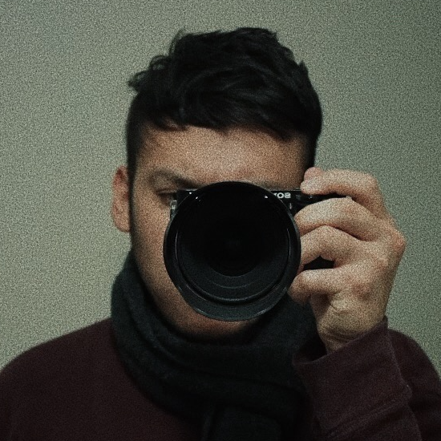
Product Designer
·
AI First
·
UX Research
·
UX Writer
Entrevistas, análisis heurístico y pruebas con Maze y Useberry. Métricas de comportamiento con Hotjar y Posthog.
Componentes, tokens y atomic design. Mobile first, bien documentado y pixel perfect.
Prototipos en HTML/CSS, Angular, Vue e Ionic. Claude, Figma AI y Mistral para acelerar el proceso.
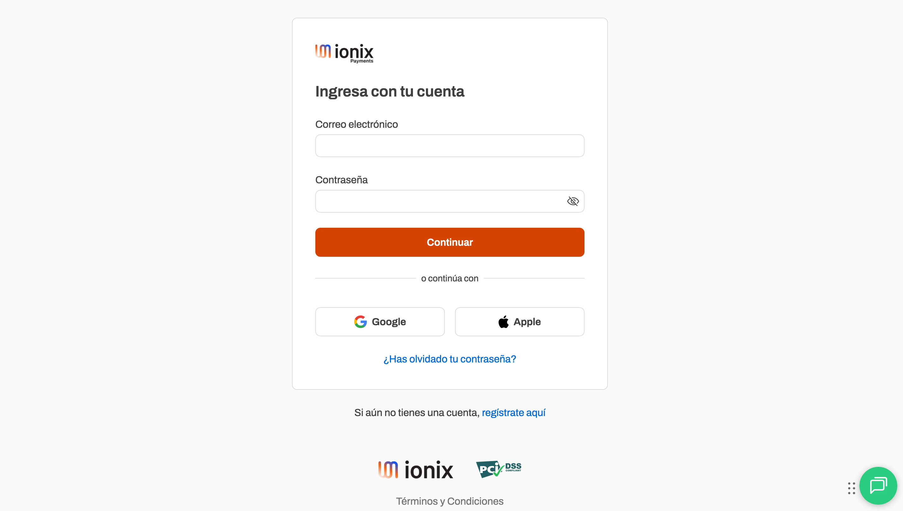
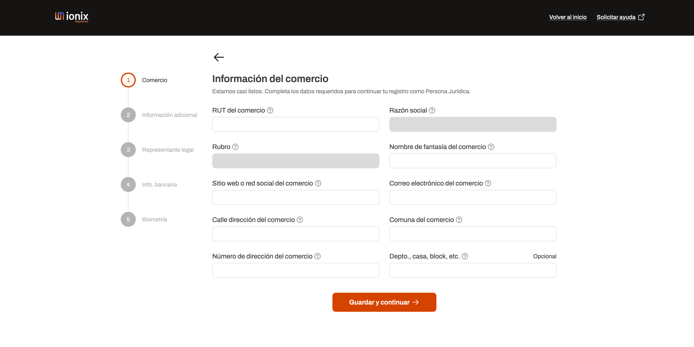
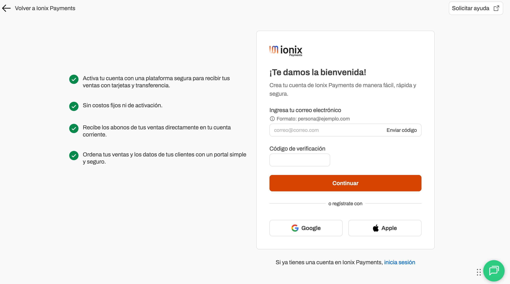
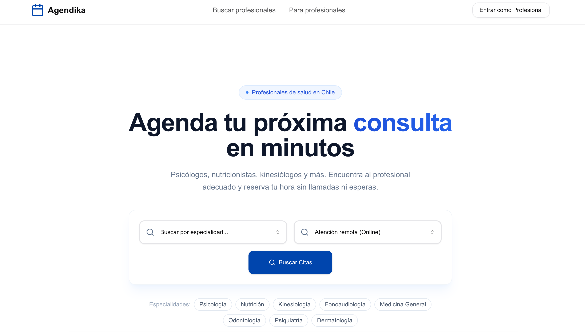
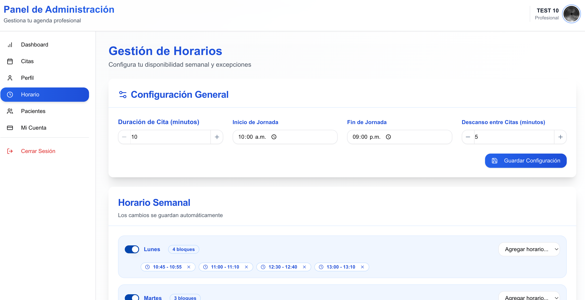
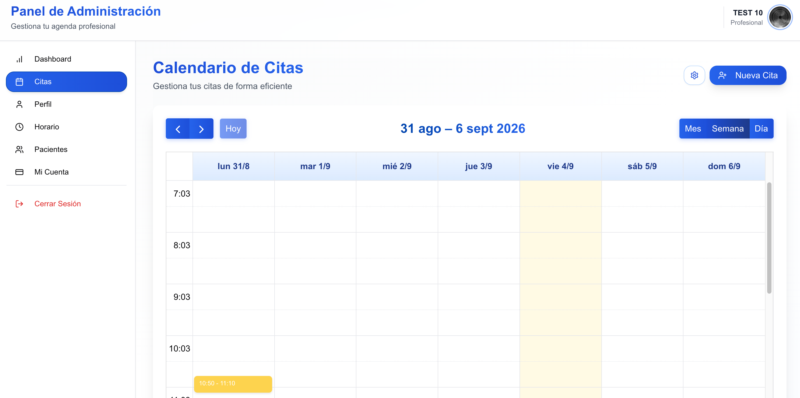
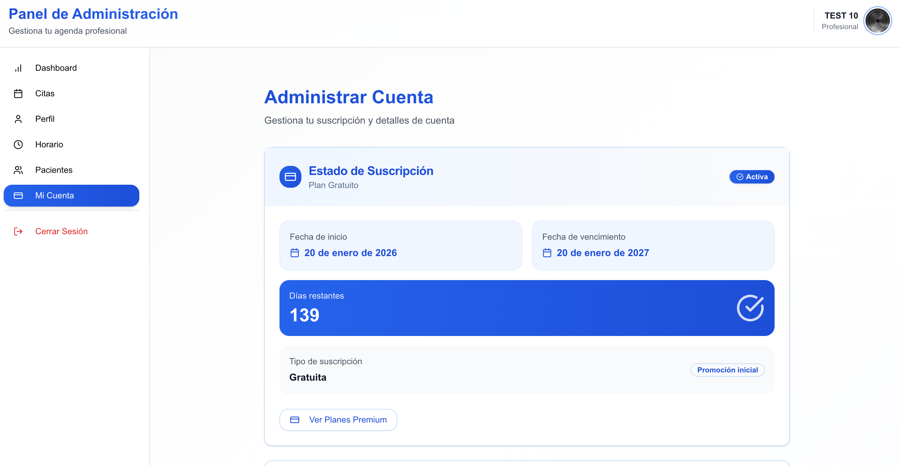
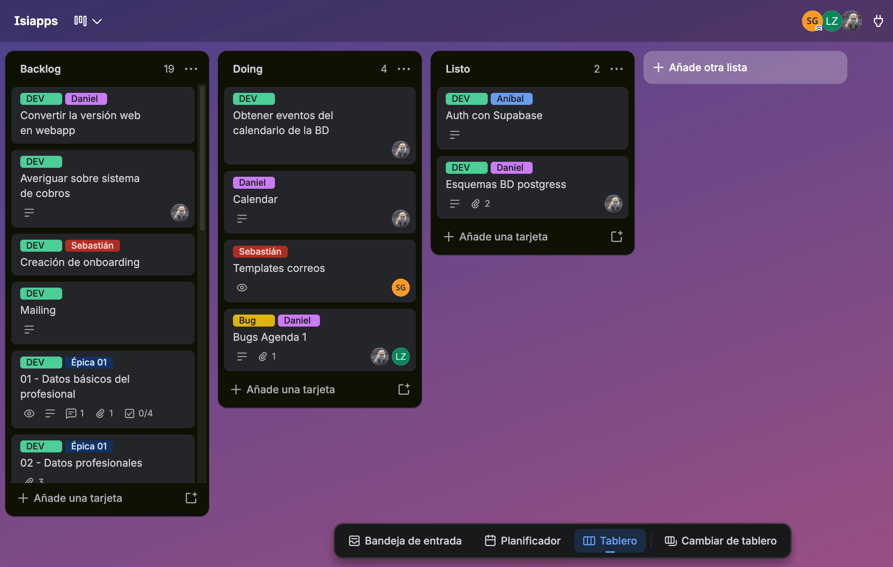
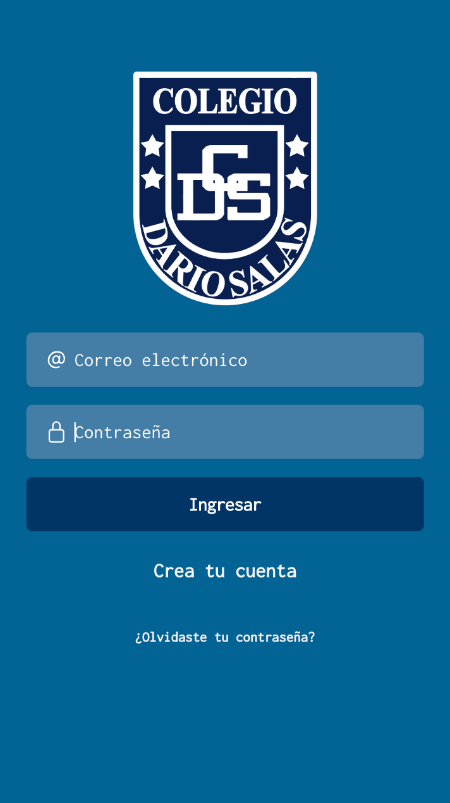
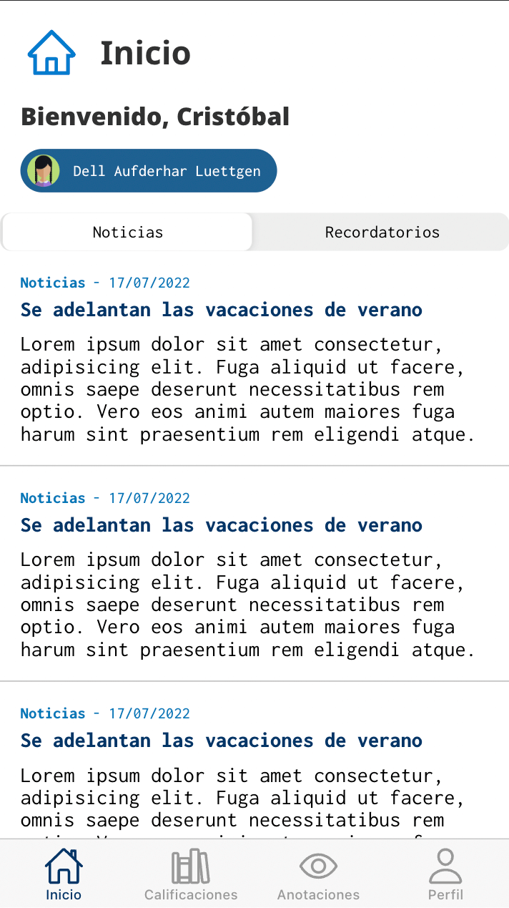
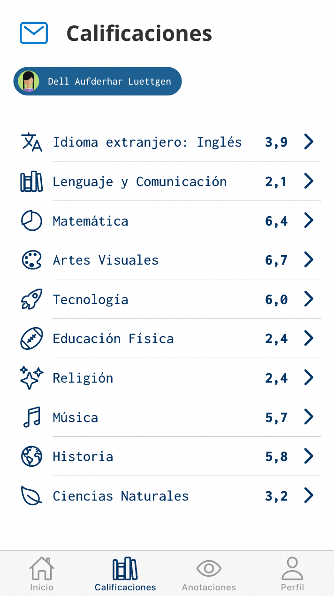
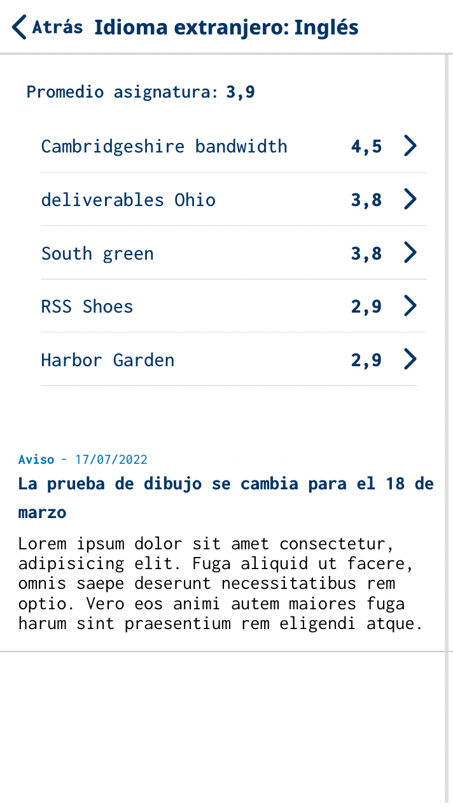
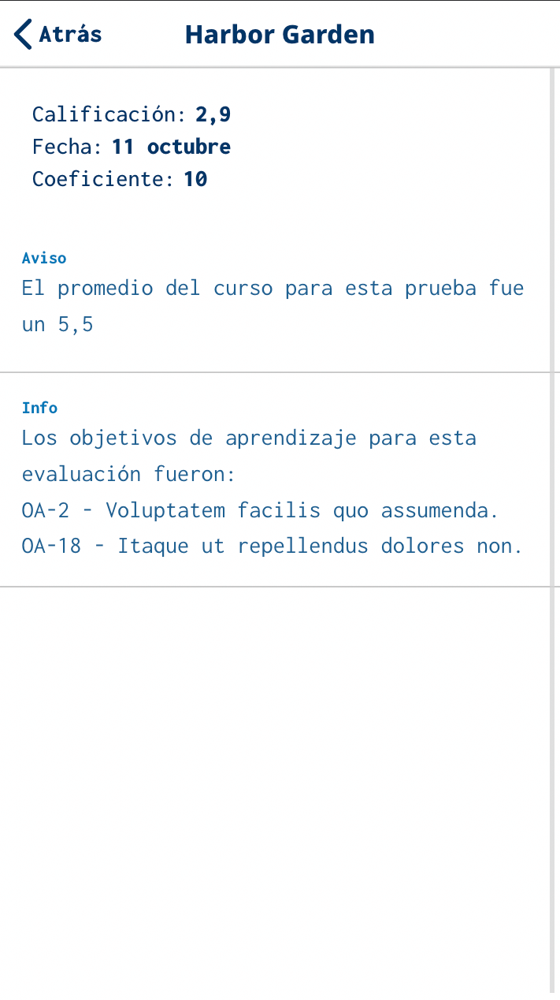
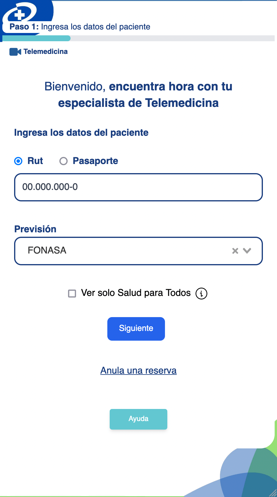
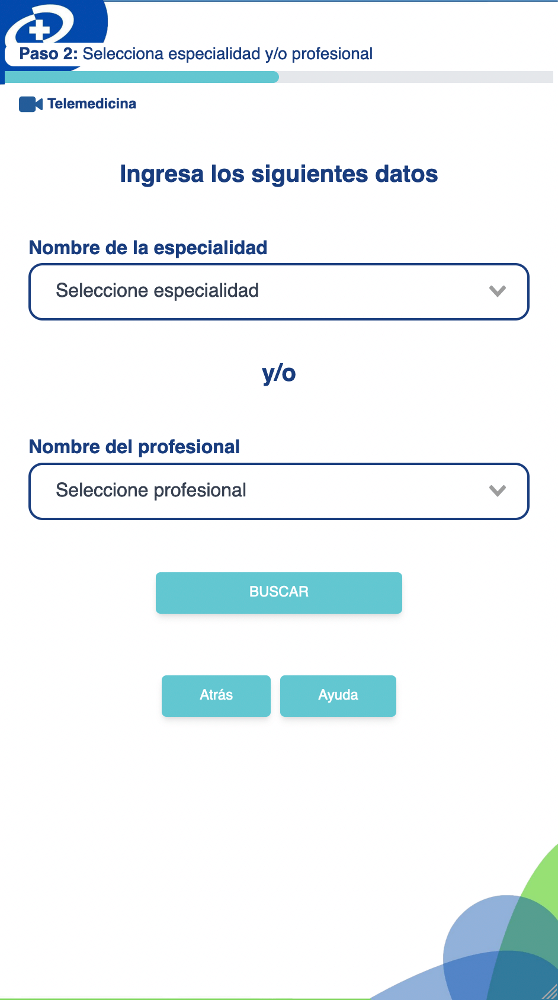
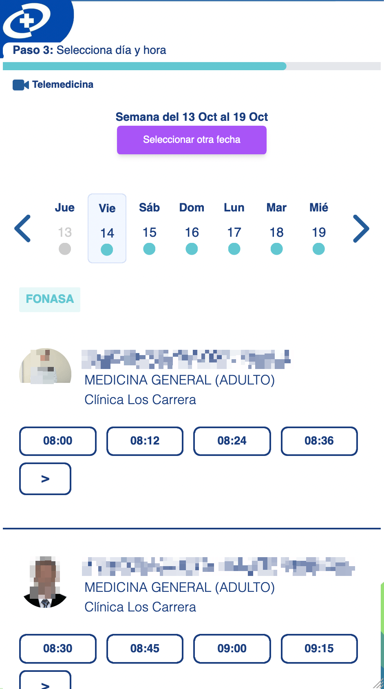
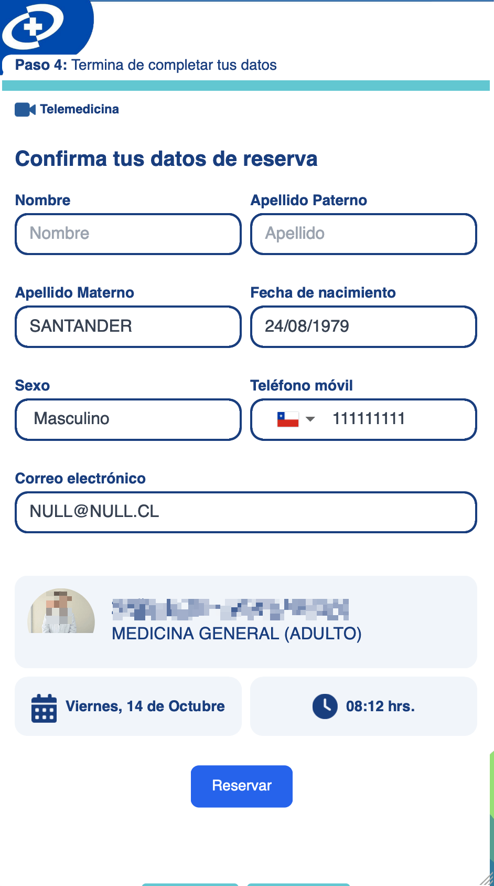